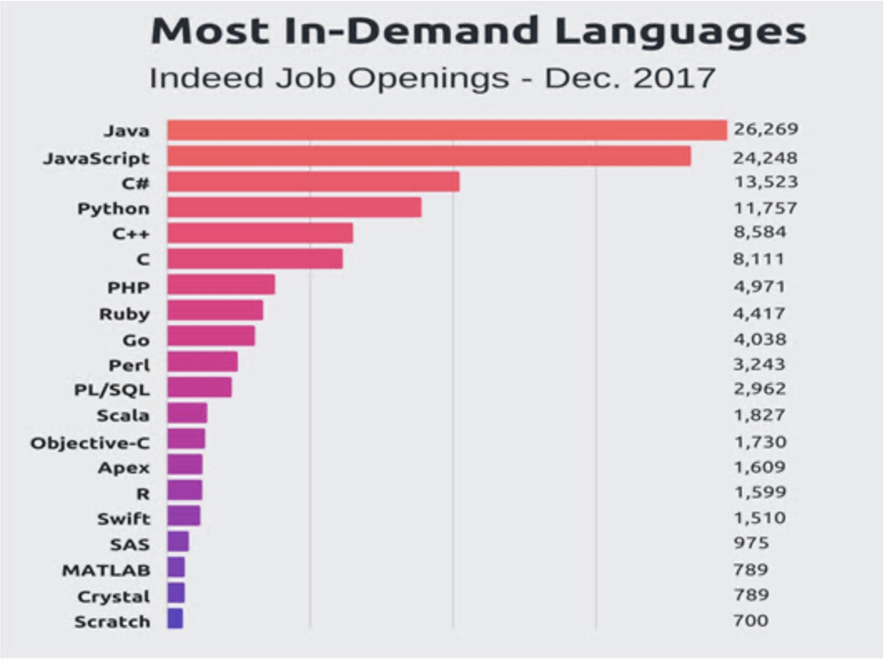

This blog post will be about javascript and how it changed over the years.
At it's inception it's goal was to make websites more interactive and enhance user experience. It has made websites the ones we know today.
It is also one of the most popular and widely used programming languages of today. It has allowed
for more and more web and mobile app development. There are multiple frameworks to use like React and Angular.
You can use it for VR and different types of games in browser and on mobile apps. Not only is it used on computers and phones
but it is also utilized in all kinds of smart devices like TV's. (Source 1)
Javascript is one of the most in deman programming languages today. It has a number of uses.
One of which is Web Development: Used to make web pages dynamic and add special effects.
Another is Web Applications: Interactions with the browser and sends messages back and forth between servers.
Presenations: Great felxibility for presenting information with nesting and optimization.
there are many more uses including Server Apps, Web Servers, Games, and Art. (Source 2)
